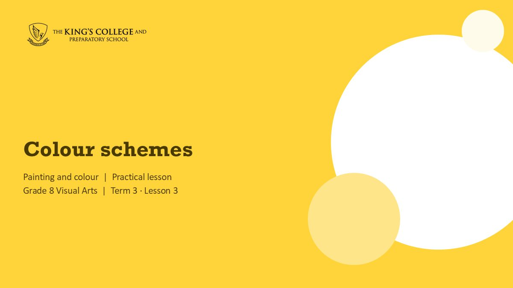

Term 2 · Lesson 1 · Practical lesson
Brushstrokes and colour in The Starry Night
Start here
Today I will
- Today I will practise four kinds of brushstroke
- Today I will mix night-sky blues and star yellows
- Today I will see how a colour scheme makes the stars glow
Look closely at this sky. Can you see which way Van Gogh's brush moved? Trace it in the air with your finger.
Words to Know
| Word | Meaning |
|---|---|
| Brushstroke | The mark a loaded brush leaves; its direction and shape show how the paint was moved. |
| Impasto | Paint put on so thickly that the strokes stand up from the surface. |
| Dry brush | Painting with very little paint on a dry brush so the stroke breaks up and lets the layer below show. |
| Complementary colours | Colours opposite each other on the colour wheel, such as blue and orange; side by side they look brighter. |
| Colour scheme | A planned choice of colours that work together, such as complementary, analogous or monochromatic. |
Slides

Videos
Notes
How Van Gogh painted: directional dashes, swirls, impasto and dry brush; the blue-and-yellow (nearly complementary) scheme that makes the stars glow; analogous and monochromatic schemes in brief.
Four brushstrokes
- Directional dashes: Short strokes laid side by side, all following one direction.
- Swirls: One loaded stroke that curves round and round, like the wind in the sky.
- Impasto dabs: Thick paint pressed on with a palette knife or a full brush, for the stars.
- Dry brush: Little paint, dry bristles: a broken stroke for texture on the hills.
Colour in The Starry Night
- Blues: Mix three blues: deep (blue and a touch of black), middle, pale (white and a little blue).
- Yellows: Lemon yellow and a warm yellow for the stars and the moon.
- The scheme: Blue and yellow-orange are nearly complementary, so the stars seem to glow.
- Other schemes: Analogous (neighbours on the wheel) and monochromatic (one hue with tints and shades) for comparison.
Let every brushstroke show which way it is going.
Practical
You need: Card with four boxes, acrylics, flat and round brushes, palette knife, palette, water pot, paper towel
Brushstroke practice sheet
- Mix your three blues and two yellows on the palette.
- Box 1: directional dashes in the three blues.
- Box 2: one swirl that turns from deep to pale blue.
- Box 3: impasto dabs of yellow on a dry blue patch.
- Box 4: dry-brush strokes over a dry layer.
- Label each box with the stroke and the colours you mixed.
- This sheet is marked out of 10: four kinds of stroke (6), mixed blues and yellows (2), neat labels (2).
Marked practical (10 marks), Brushstrokes for The Starry Night: four kinds of brushstroke practised: directional dashes, swirls, impasto dabs and dry brush (6); night-sky blues and star yellows mixed (2); neat, labelled practice sheet (2).
Test yourself
- What is impasto?
- Why do the stars in The Starry Night seem to glow?
- What is a monochromatic colour scheme?
Show answers
1. Paint put on so thickly that the strokes stand up from the surface. 2. Yellow next to blue: nearly complementary colours make each other look brighter. 3. One hue with its tints, tones and shades.
Finished early?
Read Van Gogh's brush.
- Take a small print of The Starry Night.
- Draw arrows over it showing which way each group of strokes goes.
- Find three different directions.
- Write what each direction makes you feel.